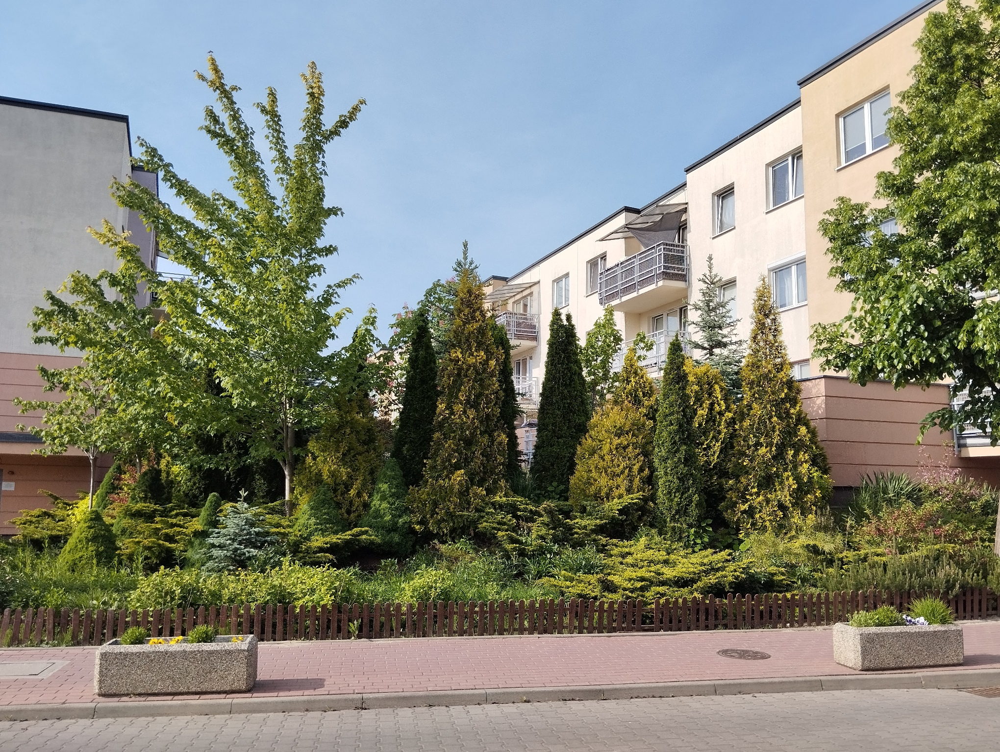
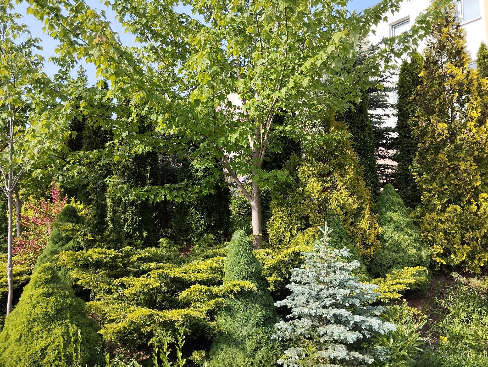

Drzewa liściaste
Witajcie na moim osiedlu, które jest prawdziwą oazą zieleni!
Tutaj możecie podziwiać niezwykłą różnorodność roślin, takich jak lipy, duby, graby, klony, brzozy, tuje, jodły, świerki i wiele innych.


Lipa drobnolistna
- Wysokość do 30 m.
- Liście sercowate, o drobno piłkowanych brzegach.
- Kwiaty - żółtobiałe, zebrane w kwiatostany, intensywnie pachnące. Pojawiają się w lipcu.
- Owoce - kuliste, ze skrzydełkiem ułatwiającymprzenoszenie. Występują w skupieniach.


Klon zwyczajny
- Wysokość do 25 m.
- Liście - duże, dłoniaste, o długich, nawet kilkunastocentymetrowych ogonkach.
- Kwiaty - żółtozielone. Pojawiają się na drzewie przed liśćmi, w kwietniu.
- Owoce - z dwoma szeroko rozstawionymi skrzydełkami. Kiedy dojrzewają, opadają na ziemię, carakterystycznie wirując.
U mnie na osiedłu są również różne gatunki kolorowych klonów.


Grab zwyczajny
- Wysokość do 20 m.
- Liście - jajowate, pofaldowane, o piłkowanym brzegu, zaostrzone na końcach.
- Kwiaty - żółtozielone, zebrane w zwisające, kotkowate kwiatostany. Pojawiają się w kwietniu.
- Owoce - Tworzą zwisające skupienia. Pojedynczy owoc ma trójkątne skrzydełko.


Dąb szypułkowy
- Wysokość do 40 m.
- Liście - o nieregulowanym kształcie i charakterystycznych głębokich wcięciach.
- Kwiaty - drobne, zielone, osadfzone po kilku na dlugich szypułkach. Pojawiają się w kwietniu i maju.
- Owoce - orzechy na długich szypułkach, nazywane żołędziami.


Brzoza brodawkowata
- Wysokość do 20 m.
- Liście - trójkątne, o piłkowanym brzegu, zazwyczaj trochę lepkie.
- Kwiaty - zielone lub drązowo-żółte, zebrane w zwiszające, kotkowate kwiatostany. Pojawiają się od marca do maja
- Owoce - drobne, z dwoma skrzydełkami, zebrane w walcowate skupienia.
- Kora - biała